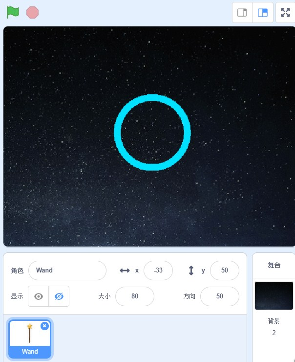

在演唱会中，出现最多的就是荧光棒，很多粉丝也都会举着荧光棒为自己的爱豆加油，当然也会有一些人用的荧光圈，为此南京小码王scratch培训机构，就想到了和小朋友一起绘制荧光圈，现在我们就一起来看看吧！
一、案例简介
小朋友们都时特别喜欢闪闪发光的东西。夜晚广场上，小朋友们的鞋子会一闪一闪的发光，手里拿的小挂件、小戒指以及带的手表都是会发光的，闪闪的很吸引人的目光。那我们今天就用scratch 3.0的画笔模块来绘制一个荧光圈。来看看效果图吧：

我们只需要添加一个魔法棒角色，挥一挥魔法棒，神奇的事情就发生了，黑夜中出现一个荧光圈，并且还在不停的切换着颜色。
二、案例编程
1.首先来制作一个自制积木“画图”，需要注意在创建自制积木时，需要勾选左下角的运行时不刷新屏幕。我们给自制积木赋予功能，首先设置画笔的颜色是随机的，然后让它重复360次，移动1步并转1°。这样就能画出圆形了
2.当点击绿旗时，隐藏我们的魔法棒，然后设置笔的粗细。让画笔重复执行：抬笔，擦除，移动，落笔，画图。每次画完等待0.5秒。
怎么样是不是很简单呢？荧光圈做出来以后，会自己不停的变色很好看。我们来看一下，本篇scratch 3.0少儿编程案例：绘制荧光圈的作品效果：